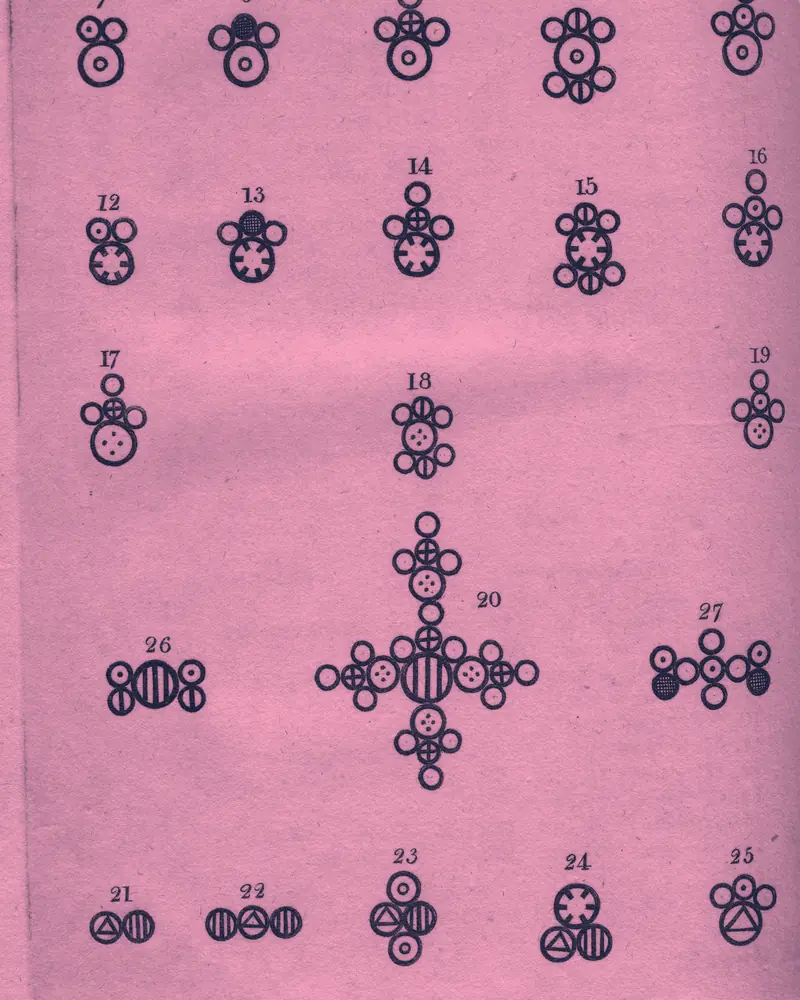
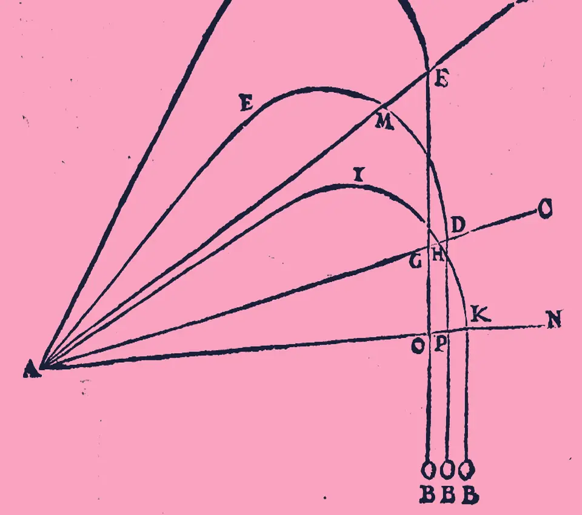

Refuerzo individual o en grupos reducidos, por videollamada, para alumnos de toda España. Desde 4º de ESO hasta la Selectividad y los primeros cursos de universidad.
Así llega un problema cuando nadie te lo ha explicado
complejo
Y así se ve cuando por fin lo entiendes, paso a paso
simple
Asignaturas que puedo ayudarte a aprobar
Refuerzo durante el curso, recuperaciones y preparación de exámenes. Siempre con tu temario y el ritmo de tus clases.

Símbolos de compuestos de John Dalton, 1810
Matemáticas
De 4º de ESO a 2º de Bachillerato (Ciencias y Ciencias Sociales). Álgebra, funciones, derivadas, integrales, probabilidad y estadística.
4º ESO · Bachillerato
Física
Cinemática, dinámica, energía, campos y ondas. Mucha práctica con problemas tipo examen, paso a paso.
4º ESO · Bachillerato
Química
Formulación, estequiometría, equilibrio, ácido-base, redox y orgánica. Con método para no perderse en los cálculos.
4º ESO · Bachillerato
Selectividad (PAU)
PAU, EBAU, EvAU o PEvAU: según la comunidad cambia el nombre. Repaso por bloques, exámenes cronometrados de convocatorias anteriores de tu comunidad y estrategia para el día de la prueba.
2º Bachillerato · Intensivo
Universidad
Muchas carreras arrancan con troncales de Matemáticas, Física y Química, y son las que más gente arrastra de primero. La mayoría de profesores particulares se quedan en Bachillerato: aquí seguimos.
Primeros cursos · Grados científico-técnicos
Un plan claro desde la primera clase
Nada de ir a remolque de los deberes: cada alumno tiene un objetivo, un ritmo y un seguimiento.
Entrevista inicial
Gratuita y sin compromiso. Vemos el nivel real, qué se te atraganta y cuál es el objetivo: aprobar, subir nota o preparar la Selectividad.
Plan a medida
Ajusto las clases a tu temario y al ritmo de tus clases. Ejercicios escogidos, resúmenes y trucos que funcionan en el examen.
Seguimiento
Dudas por WhatsApp entre clases y, si la familia quiere, un breve informe de progreso cada mes.
Tres problemas, paso a paso
Un ejercicio de cada asignatura, resuelto como en clase: primero qué te piden, después cada paso con su porqué.
Una combustión: la llama de una vela

Trayectorias de proyectiles de Niccolò Tartaglia, «Nova scientia», 1537Euclides traza una figura con el compás, «La escuela de Atenas», Rafael, 1511
Química, 2º de Bachillerato. ¿Cuántos gramos de CO2 se forman al quemar 32 g de metano?
Ajusta la reacción: CH4 + 2 O2 CO2 + 2 H2O.
Pasa los gramos a moles: 32 g ÷ 16 g/mol = 2 mol de CH4.
Lee la proporción: 1 mol de CH4 da 1 mol de CO2, así que salen 2 mol de CO2.
Vuelve a gramos: 2 mol × 44 g/mol = 88 g de CO2.
Física, 1º de Bachillerato. Lanzas una pelota hacia arriba a 20 m/s. ¿Hasta qué altura sube? (g = 9,8 m/s²)
Qué sabes: sale a v0 = 20 m/s y la gravedad le resta 9,8 m/s cada segundo.
La clave: en el punto más alto la pelota se para un instante, v = 0.
Usa la ecuación sin tiempo: v² = v0² − 2·g·h.
Despeja: h = v0² ÷ (2·g) = 400 ÷ 19,6 ≈ 20,4 m.
Matemáticas, 2º de Bachillerato. Deriva f(x) = x²·ex.
Doy clase por videollamada a alumnos de toda España. No hace falta montar nada especial: con lo que ya tienes en casa suele bastar.
Lo imprescindible
Conexión a internet estable
Un micrófono
Lo que ayuda, pero no hace falta
Cámara
Tus apuntes y ejercicios
Bizum o transferencia para pagar
Todo lo demás se adapta a cada alumno y lo concretamos en la entrevista inicial: horarios, material y forma de pago. Si vives cerca de Alicante y prefieres clases presenciales, pregúntame por disponibilidad.
Hola, soy Cristian
«Quitar un par de puntos débiles es la diferencia entre suspender y aprobar.»
Cristian Ortega · Licenciado en Químicas por la Universidad de Alicante
Soy Licenciado en Químicas por la Universidad de Alicante y llevo nueve años dando clases particulares de ciencias. Por mis clases han pasado más de cincuenta alumnos, desde 4º de ESO hasta primeros cursos de carrera.
Me gusta explicar con calma y sin dar nada por sabido: primero entender, luego practicar. Muchos alumnos llegan con miedo a la asignatura y terminan el curso con confianza (y con mejor nota).
Campus de la Universidad de Alicante
Formación
Licenciado en Químicas · Universidad de Alicante
Experiencia
9 años · más de 50 alumnos
Niveles
Desde 4º de ESO hasta universidad
Modalidad
Online, para toda España
Horario
Lunes a viernes, 16:00–21:00
Opiniones de familias y alumnos
5,0 de 5 · valoración media en buscatuprofesor.es · 7 opiniones verificadas
Raquel BarbadillaMatemáticas · 1º de Bachillerato · enero de 2025 · buscatuprofesor.es
«Mi niña está encantada con su fluidez a la hora de expresarse, la positividad q transmite en la resolución de problemas y el conocimiento técnico q traduce a un lenguaje totalmente comprensible»
«Fuaaaaa, Gracias a Christian y a la forma de que explica para que lo pillas y le des al coco he podido aprobar Física y no rendirme. Gracias»
Deborah Alese · Física · 2º de Bachillerato · febrero de 2025 · buscatuprofesor.es
«Puedo recomendar profesor Martínez Cristian, es maestro excelente,saber enseñar muy bien. Mi hija está muy contenta.»
Ruslana · Matemáticas · 2º de Bachillerato · abril de 2026 · buscatuprofesor.es
«Estamos muy contentos con Cristian, es muy buen profesor.»
Maria de las Nieves · Física · 2º de Bachillerato · diciembre de 2025 · buscatuprofesor.es
«Las clases han sido satisfactorias y he obtenido buenos resultados.»
Jeremy · Matemáticas · Estudios superiores · diciembre de 2025 · buscatuprofesor.es
«Muy amable y profesional. 100% recomendable.»
Mayte · Matemáticas · 1º de Bachillerato · marzo de 2025 · buscatuprofesor.es
«Desde que le da clase el profesor! Mi hijo aprendido más las matemáticas.»
MIRIAM · Matemáticas · 2º de Bachillerato · enero de 2025 · buscatuprofesor.es
Antes de empezar hacemos una entrevista inicial gratuita para valorar la situación del alumno, su nivel de partida y los objetivos del curso. Sin compromiso de continuar.
Si tu duda no está aquí, escríbeme y te respondo el mismo día.
Preguntasfrecuentes
¿Cómo funcionan las clases particulares online?
Por videollamada, con tu temario y al ritmo de tus clases. Solo necesitas una conexión a internet estable y un micrófono; la cámara ayuda, pero no es imprescindible. Así doy clase a alumnos de toda España.
¿Cuánto cuesta una clase particular?
Las clases individuales, de 4º de ESO a 2º de Bachillerato, cuestan 15 € la hora. En grupo reducido, de 2 a 5 alumnos, son 10–12 € por alumno y hora. Las de universidad, 20 € la hora. Sin matrícula ni permanencia.
¿Preparas la Selectividad (PAU, EBAU o EvAU)?
Sí. Según la comunidad se llama PAU, EBAU, EvAU o PEvAU, y cada una tiene su estilo de examen. Repasamos por bloques y hacemos, cronometrados, exámenes de convocatorias anteriores de tu comunidad: Matemáticas (también las de Ciencias Sociales), Física y Química.
¿Das clases particulares a universitarios?
Sí, y no es lo habitual: la mayoría de profesores particulares se quedan en Bachillerato. Preparo las troncales de Matemáticas, Física y Química de los primeros cursos de grados científico-técnicos, tanto exámenes como prácticas.
¿En qué consiste la entrevista inicial gratuita?
Antes de empezar hablamos para ver tu nivel real, qué se te atraganta y cuál es el objetivo: aprobar, subir nota o preparar la Selectividad. Es gratis y no te compromete a seguir.
¿Puedo dar clase en grupo con mis compañeros?
Sí, si sois del mismo curso y la misma asignatura. Los grupos son de 2 a 5 alumnos y cada uno paga entre 10 € y 12 € la hora, según cuántos seáis.
¿Das clases presenciales?
Las clases son online. Si vives cerca de Alicante y prefieres que sean presenciales, pregúntame por disponibilidad.
¿Cómo se paga y qué pasa si no puedo ir a una clase?
Por Bizum o transferencia. Si avisas con 24 horas de antelación, recuperamos la clase.
¿Puedo preguntarte dudas entre clases?
Sí, por WhatsApp. Y si la familia quiere, envío un breve informe de progreso cada mes.
¿Hablamos?
Cuéntame el curso, la asignatura y qué necesitas. Te respondo el mismo día y concertamos la entrevista inicial gratuita.